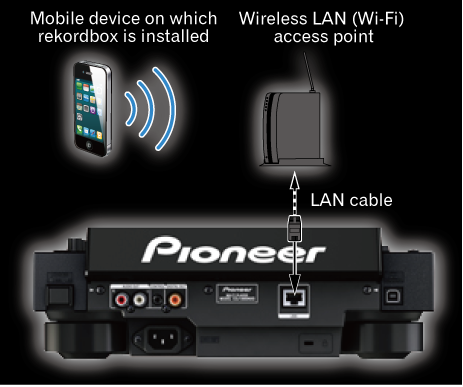
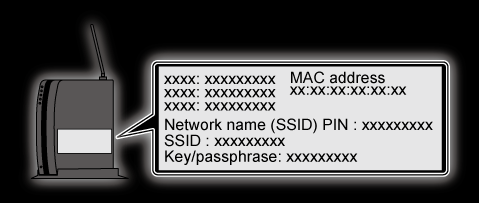
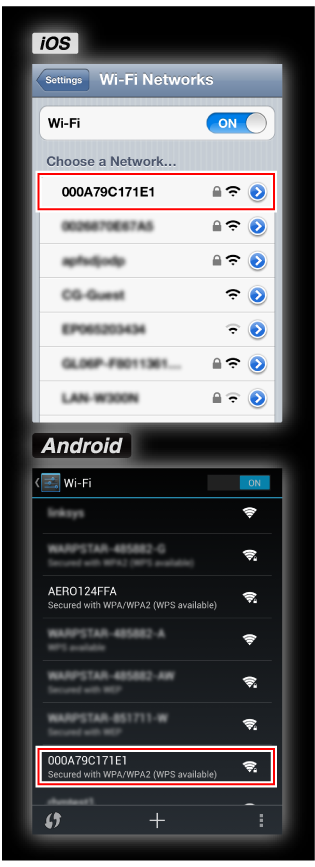
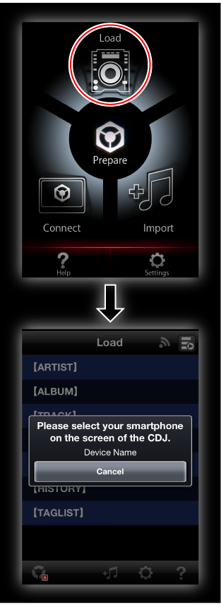
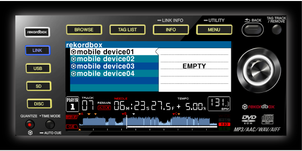

Zusätzliche Informationen
CDJ-2000NXS-Anschlussanleitung
Um die Kommunikation zwischen einem mobilen Gerät und dem CDJ-2000NXS herzustellen, müssen zuerst die SSID und das Passwort des WLAN (Wi-Fi)-Zugangspunkts, an dem das CDJ-2000NXS angeschlossen ist, geprüft werden.
Vor der Verwendung von CDJ-2000NXS lesen Sie sorgfältig die Broschüre „Vor Gebrauch lesen“ und die „Bedienungsanleitung“ CD-ROM durch, die mit dem CDJ-2000NXS mitgeliefert sind.
1Verbinden Sie den WLAN (Wi-Fi) Zugangspunkt und das CDJ-2000NXS über LAN-Kabel.

2Prüfen Sie die SSID und das Passwort, wie auf dem WLAN (Wi-Fi) Zugangspunkt, in der Bedienungsanleitung usw. angegeben.

3Öffnen Sie den Bildschirm für Wi-Fi-Einstellungen am mobilen Gerät, tippen Sie auf die SSID des Zugangspunkts, und geben Sie dann das Passwort ein.

4Starten Sie rekordbox auf dem mobilen Gerät, und tippen Sie dann auf [Load] im Top-Menü.
 Wenn anschließbare DJ-Player gefunden werden, erscheint die Meldung „Bitte Ihr Smartphone auf dem CDJ/XDJ-Bildschirm auswählen.“.
Wenn anschließbare DJ-Player gefunden werden, erscheint die Meldung „Bitte Ihr Smartphone auf dem CDJ/XDJ-Bildschirm auswählen.“.

5Wenn die [rekordbox]-Taste am CDJ-2000NXS gedrückt wird, erscheint die Liste der anschließbaren mobilen Geräte auf dem Hauptgerät-Display des CDJ-2000NXS.
